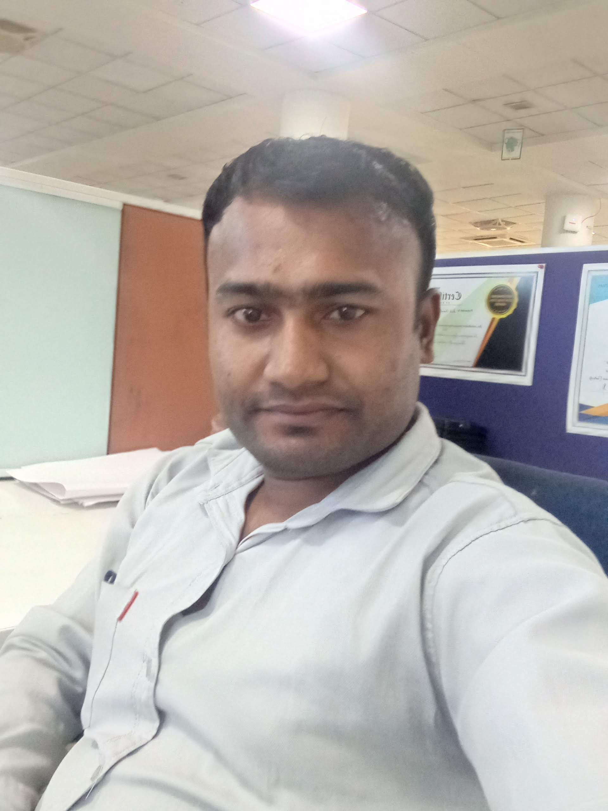

Amarjeet Sarkar

Summary
Motivated and detail-oriented aspiring software developer.
Education
Completed schooling from GIC, Sakainiya, affiliated to Uttarakhand Board & 10+2 I did From S Y D I C Ghazipur Uttar Pradesh
Done Three years DIPLOMA in Govt. polytechnic Kaladhungi (Nainital) CSE (Computer science & Engineering) Trade
Work Exprience
- One-year internship experience in TITAN COMPANY LIMITED JEWELLERY DIVISION PANTNAGAR From 1-Jan2016 to 31-Dec2016 (Job Description: Completed an internship
in desktop support, focusing on internet troubleshooting, hardware maintenance, data backup, and software management.)
- Six months in aforeserve.com limited (TVS Sundaram), Rudrapur 11-Jun-2018 to 30-Dec-2018 (Job Description:
Experienced in desktop support, including internet troubleshooting, desktop/laptop maintenance, data backup, camera setup, and OneDrive, SharePoint, and drive
encryption. Skilled in providing comprehensive IT support to ensure seamless operation and data security.)
- Eight months in Magna InfoTech (Client: Ashok Leyland-IBM Project), Rudrapur 31-Dec-2018 to 21-Oct-2019(Job Description:
Provided L1 desktop support through remote applications for workstations, PCs, laptops, barcode and sticker printers, Wi-Fi TVs, and Wi-Fi scanners. Expertise in
Outlook, Teams, SharePoint, OneDrive, Windows compliance, and Codesk ticketing tool, offering workaround support as needed to ensure seamless IT operations.)
- Vayam info solutions (Henkel Adhesives Technologies – Wipro Project), Rudrapur from Oct’19 to 31 December 2022(Job Description:
Provided comprehensive support for desktops, laptops, CAD PCs, and Linux OS, including IP cameras and barcode printers. Managed print servers, Zscaler, Teams,
Outlook, OneDrive, SharePoint, and mail archiving. Utilized ServiceNow for ticketing and offered network support for NAS, storage, firewalls, SD-WAN, and switches.)
- VDA info solution Pvt. Ltd (TATA MOTORS Ltd.) Rudrapur from 23-Mar-2023 to 13-April-2024 [Relieving letter not received](Job Description:
Provided comprehensive IT support for desktops, laptops, CAD PCs, and Linux OS, including IP cameras, barcode printers, and print servers. Managed Zscaler, Teams,
Outlook, OneDrive, SharePoint, and mail archiving, using ServiceNow for ticketing. Offered network support for NAS, storage, firewalls, SD-WAN, and switches, as well
as MECM and SCCM clients, Windows compliance, VIP user support, and video conferencing devices like Polycom and Cisco. Supported access points, NAC, CAD
workstations, Trellix, SafeGuard, and testbed PCs.)
- Indian Toners and developers limited, Sitarganj from April’24 to Present
Provided comprehensive support for desktops, laptops, CAD PCs, including IP cameras and barcode printers. Managed print servers, Teams, Outlook, OneDrive,
SharePoint, and mail archiving. Utilized ServiceNow for ticketing and offered network support for NAS, storage, firewalls, SD-WAN, and switches.
Contact info
My hobbies